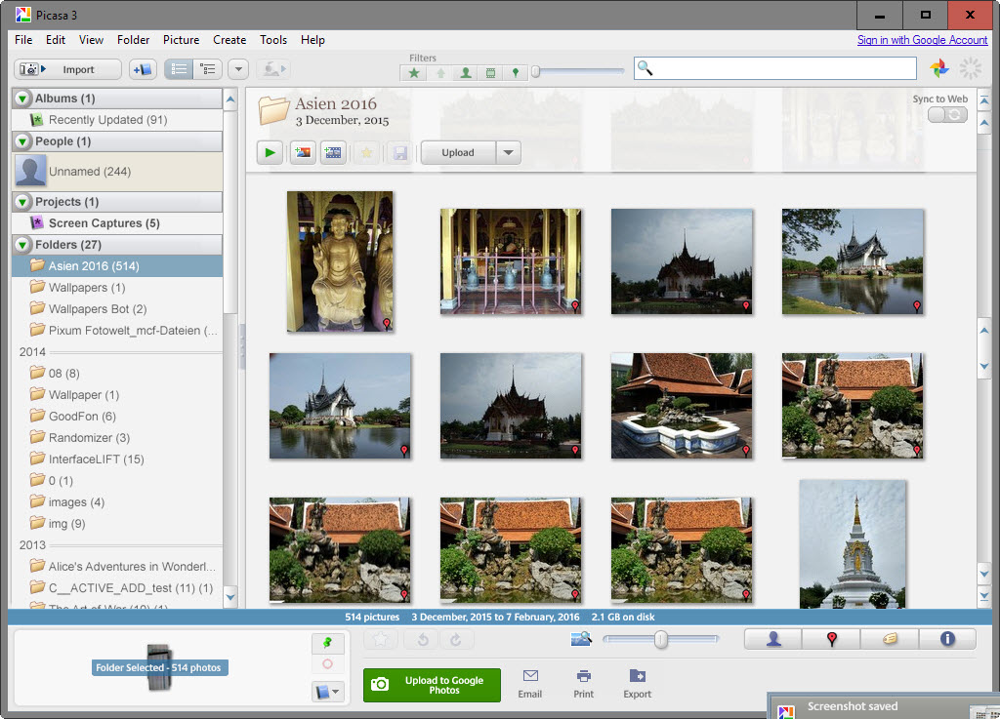
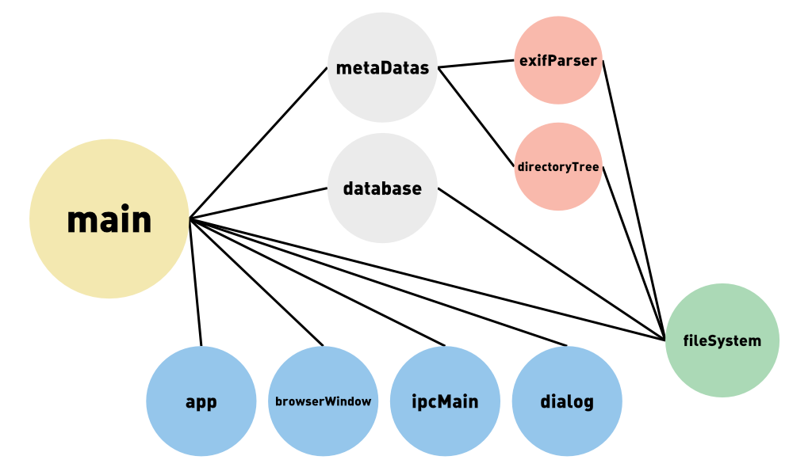
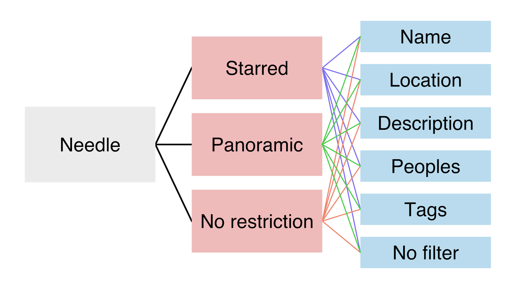

Jean-Yves - Bastien
11 janvier 2018
Contexte
Fonctionalités
Travail de groupe
Contexte
Idée de base
Choix technologiques


Electron
- Applications desktop
- Multi platforme
- Technologies WEB
- Api node.js
Vue.js
- Gestion de la vue
- Orienté composant
- Réactif
Pourquoi ces choix
- Multi platforme
- Connaisance des languages
- Simplifier la gestion de la vue
Architecture

Main process
Renderer process

Fonctionalités
Recherche

Types de filtres
- Needle
- Limiter
- Refine
Procédure de recherche
Performance de recherche
Metadonées en mémoire
Object javascript
Images en cache
Mise a jour de la bibliothèque
JSON représentatif de la librairie
Importation des photos
- Analyse du doosier
- Recuperartion des métadonnées
- Rennomage des images
- Ajout des données dans le store
Ajout de photos
Mise a jour du store
File watching - Update button
File watching
Observer le système de fichier
Importer les nouvelles images détectées
Update button
Diférenciel JSON / état des doosiers
Importation des nouvelles images
Travail de groupe
Les outils utilisés
- MS project
- Trello
- Git
Répartition des taches
| Bastien | Jean-Yves |
|---|---|
| Main | Renderer |
| Documentation | Gestion de projet |
Méthodologie
Scrum like
Planification
- Peu respectée
- Fin du projet chargée
- Repartition inégale
Conclusion
Composants / modules
Back-end / front-end